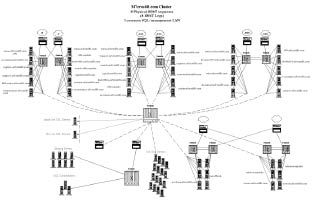
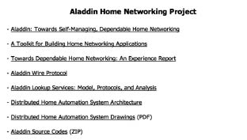
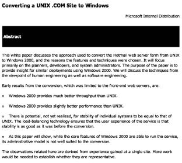
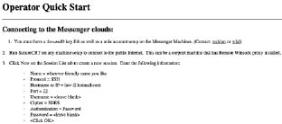
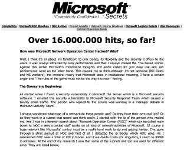

Hep iki çeşit hacker olduğunu savunmuşumdur. Bunlardan ilki sadece başkalarının bulduğu güvenlik açıklarını kullanırken, ikincisi hem kendi açık bulur, hem de başkalarının bulduğu açıklardan yararlanır. Artık ben ikinci gruba dahildim. Kendi adıma yayınladığım 50’den fazla kayıtlı güvenlik duyurum vardı. Bir süre bu güvenlik açıklarını bulup, sonradan Verisign tarafından satın alınan iDefense firmasına satmıştım.
Bu legal bir durum. Hacker bir yazılımda güvenlik açığı bulur, bunu önce yazılım üreticisine iletir, onlar açığı kapattıktan sonra da açık duyurulur. Bu durumda güvenlik açığını bulan kişi dünya güvenlik piyasasında ün yaptığı gibi yazılım üreticisi firmanın da minnetkârlığını kazanmış olur. Türkiye’de ilk güvenlik duyurusu yayınlayan kişiydim. Günümüzde açık yayımlayan bazı kişiler olsa da bu kitabın yayımlandığı tarihe kadar henüz 50’nin üzerine çıkan olmadı.
Bu tempo içinde bir ara Microsoft’un güvenlik duvarı yazılımı ISA Server üzerinde çalışıyordum. Windows’un çekirdeğine kadar uzanan bir zayıflık keşfetmiştim. Güvenlik duvarı bazı saldırılarda paket kaçırarak cevap veremez duruma geliyordu. Microsoft bu problemin router’dan erişimin engellenmesiyle çözülebileceği şeklinde bir savunma yapmıştı. Gece yarısı şirkete gidip çalışmayan internet için router’dan tanımlama yapmak ne kadar mantıklı olabilirdi ki? Microsoft böyle bir açıklama yaparken GFI firmasının baş analisti dahil birçok insan bana e-posta göndererek ISA Server ile birlikte çalışan yazılımlar yaptıklarını, bu sorunu nasıl aşacaklarını danışıyorlardı.
Microsoft ile yazışırken benim takıldığım konunun asıl problemle hiç alakası yoktu. Acaba bu adamlar içeride ne yapıyordu? Microsoft’ta neler oluyordu? O büyük monopol, tekel, dev firmada işler nasıl yürüyordu? En önemlisi dünyanın en zengin adamı Bill Gates neler konuşuyordu? Beni ilgilendiren bunun gibi soruların cevabıydı.
Microsoft şirketinin kurucularından ve şirketin başkanlığı yanı sıra baş yazılım mimarlığını yapan Bill Gates bize medyada hep “dünyanın en zengin adamı” titriyle sunulmuştur. Forbes dergisine göre 2009’da 62 milyar dolarlık servetiyle dünyanın en zengin kişisi ünvanını aldığı düşünülürse medyaya hak vermemek elde değil. Başlangıçta sadece iki kişinin çalıştığı şirketi Microsoft’u kişisel bilgisayar pazarında tekel bir yazılım şirketine dönüştürerek 20. yüzyılın son döneminde sürdürdüğü acımasız stratejilerin de yardımıyla en çok kazanan şirket patronlarından biri Bill Gates.
William Henry “Bill” Gates III, 28 Ekim 1955’te Seattle’da avukat bir baba ile öğretmen annenin oğlu olarak dünyaya gelir. Henüz 12 yaşındayken özel bir okulda ilk kez bilgisayar kursuna gider. Okul arkadaşı Paul Allen ile birlikte boş zamanlarını çoğunlukla bilgisayar yazılımları üzerinde çalışarak geçirirler. Yakınlarındaki bir şirketin büyük bilgisayarını para ödemeden kullanabilmek için iki arkadaş, kullanıcılar için yazılım hatalarını arayıp bulma görevini üstlenir. Bu şekilde bilgisayar konusunda uzmanlaşan öğrenciler, 1972’de ilk şirketleri olan Traf-O-Data’yı kurarlar. Bill Gates kendi kitabında bu ismin o zaman onlara çok ahenkli geldiğini düşündüklerini söylemişti. Bu şirket bir trafik sayım ve kontrol sistemi için yazılımlar üreterek kısa sürede 20.000 dolarlık satış yapmayı başarır. Bill bundan bir yıl sonra TRW adlı silah işletmesinde staj görmeye başlar.
Kişisel bilgisayarların henüz gelişim aşamasında olduğu 1970’li yılların ortasında, MITS şirketi ellerindeki en önemli numuneye Altair adını vermiştir. Altair standart ve kullanılabilir bir yazılıma sahip olmamakla birlikte bütünüyle tamamlanmamış bir işletim sistemine sahiptir. Bill ve Paul, Altair için 1974 yılında Basic adlı yazılım dilini geliştirirler. Bu sayede bilgisayar kullanıcıları programlarını kendileri yazabilir hale gelir. MITS şirketi genç araştırmacılardan pazarlama ruhsatını satın alarak kendilerine sistemi daha da geliştirmeleri için sipariş verir ve Bill bunun üzerine tahsilini bırakarak Allen ile birlikte Albuquerque’da Microsoft’u kurar.
Microsoft, kendini sabırla mikrobilgisayarlar için yazılım geliştirmeye adayan ilk işletmelerden biri olmuştur. Aradan kısa bir süre geçtikten sonra General Electric gibi şirketler, devamlı müşterileri arasına girer. Bill 1977’de, aletlerini Basic ile donatabilmek amacıyla, Apple, Tandy ve Commodore gibi pc üreticileriyle lisans sözleşmeleri imzalar. Ayrıca Fortran, Cobol ve Pascal gibi yazılım dillerini geliştirmekle, Microsoft’a bir üstünlük sağladığı gibi öncelikle Japonya sonra tüm uluslararası pazar yolunun kendilerine açılmasında rol oynar. Gates 1979’da yalnızca 13 çalışanıyla yaklaşık 3 milyon dolarlık bir satış gerçekleştirir.
PC’ler için yazılması gereken işletim sistemi teklifinin Gary Kildall tarafından reddedilmesinin ardından IBM, Bill Gates’e yönelir. Bill, Seattle Computer Products şirketinden 50.000 dolar karşılığında Dos işletim sistemini satın alır. Dos işletim sistemi IBM’in ihtiyaçları doğrultusunda değiştirilerek Ms-Dos adını alır. Ms-Dos 80’li yıllarda dünya çapında satış rekorları kırarak 120 milyon kopya satar.
Bill akıllıca bir öngörüyle haklarını mahfuz tutarak diğer donanım üreticilerine de satış yapar. Bunu izleyen zamanda giderek daha çok şirket IBM ile bağdaşan aygıtları piyasaya sürünce, geliştirdikleri işletim sistemi bütün bilgisayarlar için standart hale gelir. Bu arada çalışan sayısı 1000’e yükselen şirket, 80’li yılların ortasından sonra Avrupa’da şubeler kurmaya başlar.
Bill Gates işletim sistemine paralel olarak uygulama yazılımları alanında da çalışır. Multiplan Çizelge Hesap Yazılımından sonra, 1983’te ilk kez fareyi kullanan Word adlı metin işleme sistemini başlatır. Word özellikle Avrupa’da çok satılırken, ABD’de tamamen kopyaladığı Lotus 1-2-3 ve WordPerfect adlı rakipleri karşısında ancak yavaş yavaş başarıya ulaşacaktır.
Microsoft’un yazılım alanındaki kesin tekeli, Apple şirketinin kendilerine verdikleri siparişle gerçekleşir. Macintosh adını verdikleri örnek oluşturacak nitelikteki bilgisayar için Word, Excel gibi uygulama sistemleri geliştirilir. Bill Gates şirketini 1986’da anonim şirkete çevirir. Aradan çok geçmeden yalnız kendi payı olan yüzde 45’in borsa değeri 1 milyar doların üzerine çıkar.
Ms-Dos işletim sisteminin grafik bir iyileştirmesi olan Win-
dows’un geliştirilmesi çalışmalarına Gates 1985 yılında başlar. 1987 yılında Windows’u piyasaya sürdükten üç yıl sonra bir pazarlama kampanyasıyla başarılı olurlar. Bill Gates özellikle Windows’u daha basit ve daha kullanışlı bir biçime sokmaya önem verir. Bu yüzden Apple’ın Mac OS X işletim sisteminden font yönetimi dahil birçok konuda kopya çekmekte tereddüt etmez. Microsoft 1993’te yıllık 36 milyar dolar ciro, 140 milyar dolar üzerinde borsa değeriyle tartışmasız piyasa lideri olur.
Günümüze gelirsek Bill Gates şu anda 5 bin metrekarelik bir evde oturuyor. Evli ve üç çocuk babası. Da Vinci’nin el yazması kitaplarının orijinal kopyalarını elinde bulunduran Bill Gates kabaca bir hesapla saniyede 250 dolar kazanıyor.
Bill Gates’in böyle bir hikâyesi varken, şirketinde neler çevirdiğine dair merakımın önüne geçemiyordum. Eskiden beri Microsoft ile bir dirsek temasım vardı. 2000 yılında henüz heyecanlı bir gençken ilk seminerimi Microsoft’un Balmumcu’daki binasında iş dünyasının büyük kuruluşlarının bilgi işlem yöneticilerinin katıldığı bir organizasyonda vermiştim. Microsoft binasında, Microsoft ürünlerinin açıklarını anlatarak yöneticileri biraz kızdırmıştım.
Microsoft ile yazışırken önlenemez şekilde bir istekle e-posta-
ların geldiği ip adreslerini araştırmaya başladım. IP bloğu içerisinde olan tüm ip adreslerini tarayarak gözden geçirdim. Microsoft’un tüm ağ aktivitelerinin yönetildiği yer Microsoft Network Operation Center olarak geçiyordu.
Microsoft’un kullandığı tam 120 ip bloğu vardı ve toplam adres sayısı 30 bini geçiyordu. Böyle bir ağı kontrol altında tutmak oldukça zor olmalıydı.
Kısa bir araştırmadan sonra 30 binden fazla ip adresini gruplandırdığımda Microsoft sistemlerinin bölümlere ayrıldığını fark ettim:

Microsoft ağ yönetim merkezi, ağ şeması.
– Microsoft Windows, Games, Office geliştirme ekipleri.
– Microsoft .NET test sunucuları.
– MSN Hotmail/Passport yönetim sunucuları.
– Microsoft tabanlı firmaların sunucuları.
– Şirket ağında çalışarak trafiği izleyen sunucular.
– Switch ve router cihazları.
Yerel ağa sızdıktan sonra çok daha farklı bilgilerle karşılaştım. Çeşitli proje dosyaları, teknik dokümanlar, yazışmalar. Ama istisnasız bu bilgiler içerisinde en dikkat çeken Bill Gates’in e-posta arşiviydi. Bulduğum e-posta kayıtlarında Bill Gates’in ortağı Steve Ballmer ile yazışmaları, eşi Melinda Gates ile kızı hakkında yaptığı konuşmalar ve başka bazı kişisel yazışmalar yer alıyordu.
Proje dosyalarında ise ilgi çekici olan şeylerden ilki “Alaaddin Projesi”ydi. “Alaaddin” için bir ev yönetim sistemi denilebilirdi. Bill Gates’in yıllardır evinde kullandığı merkezi otomasyon sisteminin kişisel pazara taşınmış versiyonuydu bu. Akıllı ev mantığıyla hazırlanan bu projede buzdolabında bile Microsoft izini görebilecektik. Bu proje maalesef ben proje dosyaları ile kaynak kodlarını internette yayınladıktan sonra iptal edildi.
Bunların dışında Microsoft, Hotmail e-posta servisini satın aldığında mühendislerin hazırladığı raporlara da ulaşmıştım. Bu raporlarda kısaca Hotmail sistemlerinin FreeBSD üzerinde çalıştığından Windows işletim sistemine geçilirse ciddi aksamalar olacağından, Windows işletim sisteminin kişisel bilgisayarlar için geliştirildiğinden, sunucu sistemlere uygun olmadığından bahsediliyordu ki bu büyük bir olaydı. Microsoft mühendisleri kendi sistemlerini kötülüyorlardı.

Aladdin akıllı ev sistemi projesi dosyaları.

Microsoft tarafından hazırlanmış, Hotmail servisi gibi Unix sistemlerin neden Windows’a çevirilmemesi gerektiğini anlatan gizli doküman.
Diğer bir dosyada Hotmail operator guide (Hotmail yönetici kılavuzu), yani Hotmail e-posta sistemlerine nasıl bağlanılıp çeşitli yönetimsel görevlerin gerçekleştirileceğine dair bilgiler yer alıyordu. Ele geçirdiğim bilgilerin neredeyse hepsi gizlilik içeren dokümanlardı.
Bu bilgileri paylaşmamak haksızlık olur, diye düşündüm. Bir yandan kafam farklı çekincelerle doluyken bir internet sitesi hazırlayarak ismini Microsoft Secrets (Microsoft’un Sırları) koydum. İnternet sitemin alt dizininde yayınlayarak ilgili linki birkaç arkadaşıma gönderdim.
İnternetin en güzel yanı olarak gördüğüm özellikle, yani bir insan çemberi yaratılarak bilginin hızla oradan oraya yayılacağını biliyordum. Hazırladığım sitede gerçekten de bu zinciri yaratabilecek kadar ilginç bilgiler vardı. Ertesi günün akşamı, internet sitemi tuttuğum şirket sunucumuzu barındıran servis sağlayıcının teknik elemanı aradı. Sunucuya çok ciddi bir saldırı olduğunu söyleyerek hatlarının büyük bölümünü işgal ettiği için işleyişte aksamalar olduğundan bahsetti.

Hotmail sistem yöneticileri için hazırlanan yönetim kitapçığı.
Hemen atlayıp internet servis sağlayıcıya gittim. Trafiği analiz ettiğimde ise şok oldum. Dünyanın her yerinden saniyede yüzlerce istek geliyordu, bu isteklerin hepsi de benim internet adresimeydi.
Kısa bir araştırmadan sonra Microsoft Secrets sitemin dünyanın en çok ziyaret edilen internet siteleri arasında yer alan Slashdot’a haber olduğunu öğrendim. Özellikle Microsoft mühendislerinin kendi ürünlerini kötülemeleri onların çok dikkatini çekmişti. Haber Slashdot’ta yayınlandıktan sonra Wired, The Register, ZDnet gibi kaynaklarla birlikte yaklaşık 10 ülke basınında geniş yer aldı. Türkiye’de ise durum farklıydı. Bazı dergi ve gazetelerde yayımlansa da bizim basın büyük balığın peşindeydi. Tirajlı gazetelerden biri o sıra Vestel’in Manisa’daki tesislerini ziyarete gelen Bill Gates ile beni buluşturmayı önerdi. Hack edenle birlikte hack edilen kişi olarak gazeteciler önünde tanışıp el sıkışarak poz verecektik. Bunun komik ve büyük oranda provokatif olacağını düşündüğümden pek yanaşmadım.
Yoğun ziyaretçi trafiği altında ezilen sunucunun hafızasını artırarak gelen trafiği başka internet servis sağlayıcılarda sunucuları olan arkadaşlarıma yönlendirdim. Çok kısa sürede 1 milyonun üzerinde kişi sitede yazılan bilgileri okumuştu. Ben yine diken üstünde beklerken, diğer yandan artık bunun son hack olayım olduğuna dair kendi kendime sözler veriyordum. Arkadaşlarım da “Zirvede bırakmak buna denir” diye daha fazla zarar görmemem için beni motive etmeye çalışıyorlardı. Öyle de oldu. Microsoft olayından sonra kendimi profesyonel iş yaşamına yönlendirerek, hacker felsefesinden aldığım ilhamla artık daha mantıklı hareket etmeye başladım.
Microsoft ise yaşananlar karşısında mantıklı şekilde gerçek bir kurum kültürüyle hareket etti. Microsoft basın sözcüsüne bu olay sorulduğunda sözcünün cevabı “Evet sistemlerimizde kimi zaman güvenlik açıkları oluyor. Bu açıkları fark ettikçe kapatmaya çalışıyoruz. Fakat şirket politikası gereği bu konu hakkında daha fazla açıklama yapmam mümkün değil” olmuştu.
İşte yaklaşım tam da bu şekilde olmalıydı; ne kibirli, ne küçümseyen, ne de durumun kontrolleri dışına çıktığını hissettirecek derecede dengesiz. Biz halen iş etiği ve bilgi güvenliği bilinci açısından o eşiğe yaklaşamadık maalesef.
Bu sürecin ardından kısa süre sonra Microsoft merkezden avukatın biri bana bir e-posta gönderdi. Takıldıkları konu gerçekten komikti. Avukat Microsoft logosunun Microsoft Corporation’ın malı olduğundan dolayı bunu izinsiz kullanamayacağımdan bahsediyordu. Microsoft logosunu değiştirip “Micro$oft” yaparak artık sorunun çözüldüğünü belirten cevap gönderdim. Avukat için bu yeterli olmuştu.

Şimdiye dek 16 milyonun üzerinde ziyaret edilen Microsoft Secrets internet sitesi.
http://tamersahin.com/mssecrets/
Microsoft’u hack etmemi fırsata çevirmeye çalışanlar da olmadı değil. Benden güvenlik açıklarını telif bedelini ödeyerek satın alan iDefense firması e-posta göndererek “Tamer konuyu biz de takip ediyoruz. Diğer yandan elinde satın alabileceğimiz kıymetli bir bilgi olup olmadığından emin olmak istedik” diyerek etik değerlerden çok uzak bir yaklaşım sergiledi. Elimdeki tüm bilgileri yayınlamış olmasam bile onlara aksini söyleyerek konuyu kapattım.
Microsoft ile ilgili bilgileri yayınladığım internet sitesi Microsoft Secrets 2002 yılından beridir yayında. Aralarında “Açık Kod” hareketinin mimarı Richard Stallman’ın da bulunduğu pek çok insan tarafından kitaplarda, makalelerde kaynak olarak gösterilmeye devam ediliyor.
İnternet bir kez daha kanıtlamıştı ki dili, dini, ırkı, siyasi görüşü, gelir seviyesi ne olursa olsun herkes internet üzerinde eşit. Ben Türkiye’de kendi halinde biri olarak, dünyanın en zengin adamı Bill Gates’i hack edebiliyordum. İnternetin güzelliği de burada; özgürlüğünde ve herkese şans, eşit şans vermesinde.